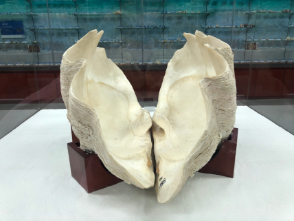

清华大学生物标本馆简介
历史沿革
清华大学标本馆是生命科学学院收藏和展示动植物标本，面向全校开展宏观生物学教育的教研和科普机构。
标本馆前身是清华大学生物学系的动植物标本室，积累有两万余件动植物标本，后来这批标本因院系调整转入兄弟院校收藏。2009年9月28日，历经两年筹备的清华大学标本馆正式恢复开馆。2012年成为北京
市高校博物馆联盟理事单位。
2019年，经过多方努力，清华大学标本馆随生物学馆一道完成修缮，在标本充实、维护和更新后再次开放。目前，标本馆设有贝类、昆虫、哺乳与两栖爬行动物，鸟类与海洋动物四大展区以及植物标本室。标
本馆以其精美的藏品和独特的展出方式吸引着众多参观者，是清华大学重要的人文素质教育和科普基地之一。
展馆简介
贝类展区
昆虫展区
标本馆有着丰富的贝类标本收藏，在展示方式上也十分新颖生动。南北两侧展室共展出了115科1000余种精品贝壳，其中，
馆藏的龙宫翁戎螺和帕劳鹦鹉螺等都为稀世珍品，耳熟能详的“四大名螺”突出展现在展室之中。一片海蓝色中，贝壳如繁
星般错落在白沙中，让人如置身美丽的海洋世界。

志愿者团队
清华大学标本馆在馆长和指导教师的组织下，建设了一支由本科生和研究生组成的志愿者队伍，自2009年开馆以来，累计有超过100名来自各个院系的学生参与到标本馆的志愿工作中，参与布展，宣传设计，接
待参观，志愿讲解等各项活动。学生志愿者团队是标本馆建设中不可或缺的中坚力量。
欢迎大家前来参观，水木清华，荷塘北畔，静候光临!